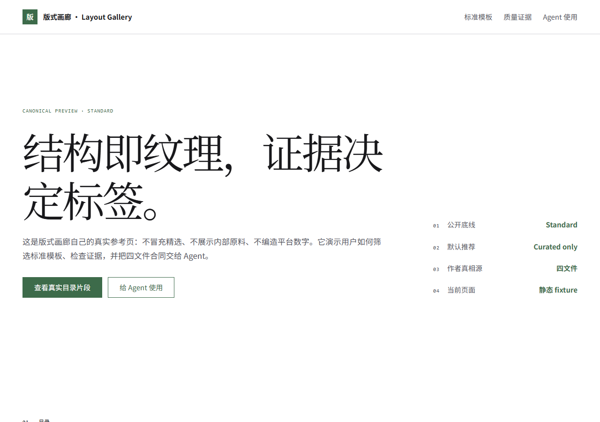
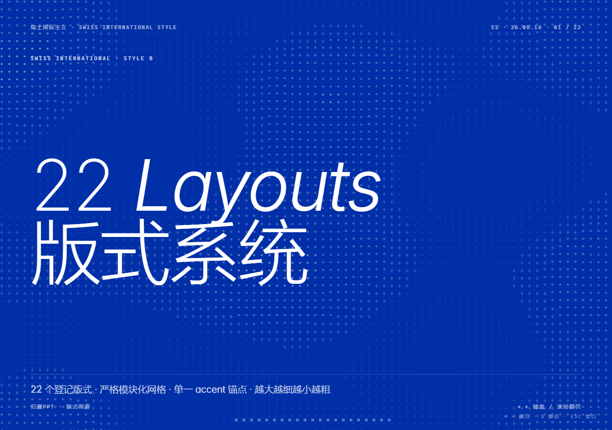
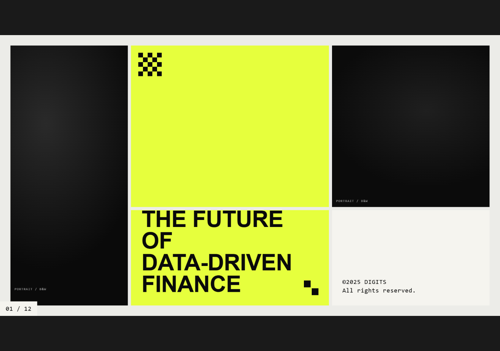

标准
版式画廊 · Layout Gallery
鼠尾草绿、中文衬线标题与结构化细线网格。平台自身的四文件试点。
查看适用边界
适合设计系统、收藏目录与机构首页；不适合高能量消费促销。
这是版式画廊自己的真实参考页：不冒充精选、不展示内部原料、不编造平台数字。它演示用户如何筛选标准模板、检查证据，并把四文件合同交给 Agent。
这里是标注日期的静态快照，slug 与分类取自仓库 registry；它演示卡片与筛选，不把动态计数写死进模板。
STATIC FIXTURE · 2026-08-09 · SOURCE: data/registry.json

鼠尾草绿、中文衬线标题与结构化细线网格。平台自身的四文件试点。
适合设计系统、收藏目录与机构首页；不适合高能量消费促销。

模块化网格、单一强调色与明确的字号—字重阶梯。
适合数据、流程和机构叙事；内容必须匹配登记版式，不临时发明骨架。

高对比网格、粗体标题与等宽元数据，适合编辑型新粗野主义表达。
适合强结论与短文本；长篇阅读必须降低标题密度并扩大正文行距。
只有完成独立复现、压力测试与人工签署的模板才会出现在这里。当前不拿标准模板冒充精选。
页面不硬编码“全绿”结论。机器结果写入 generated/layout-gallery/quality-report.json；这里演示用户需要看到的证据类型与失败边界。
manifest、intent、tokens、reference 均可独立定位问题。
404、console error 与未定义变量任一出现即阻断 Standard。
390、768、1440 的 scrollWidth 必须等于 clientWidth。
Standard 不自动升级；Curated 还需要复现与人工审美签名。
先知道“是什么”，再理解“为什么”，随后读取可修改控制面，最后参考可执行正例。